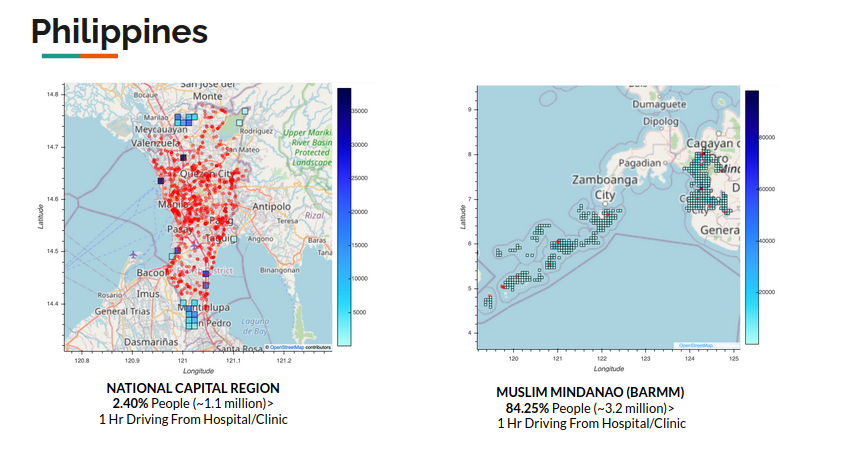

Hospital Accessibility Analysis
Contents
Hospital Accessibility Analysis#
Note
A full article and description is published on the UN World Data Forum Blog.
Challenge
Indonesia and the Philippines are archipelagos, where geographic and administrative boundaries are similar. The collection of islands is home to different concentrations of ethnic, cultural, linguistic, and socioeconomic groups, with an imbalanced distribution of health facilities and physicians.
Through conversations with experts on the ground, we understood that health facility records are largely incomplete and on paper. By using a combination of public and private sector data, we aimed for a more comprehensive understanding of health facility accessibility.
Solution
To measure health accessibility, we focus on travel times to the nearest health facility. By using time as our comparison metric, we take into account key barriers like the quality of roads and the amount of traffic. In our analysis, we aim to understand what parts of a region/province are beyond the threshold for acceptable travel time.


To test our framework in various settings, we use national health and demographic survey data to focus on regions with high health indicators and a region with low health indicators in both countries. For Indonesia, we chose East Java (high health indicators) and Papua (low health indicators). For Philippines, we focus on National Capital Region or NCR (high health indicators) and Bangsamoro Autonomous Muslim Mindanao or BARMM (low health indicators).
Installation#
Basics#
Clone the code to your machine using the standard Git clone command. If you have SSH keys setup the command is:
git clone git@github.com:datapartnership/hospital-accessibility.git
Docker#
You will need to have Docker and docker-compose installed on your system to run the code.
Install Docker#
For Mac: https://store.docker.com/editions/community/docker-ce-desktop-mac
For Windows: https://store.docker.com/editions/community/docker-ce-desktop-windows
For Linux: Go to this page and choose the appropriate install for your Linux distro: https://www.docker.com/community-edition
Mapbox Token#
Head over to Mapbox and grab your token.
Copy the
.env.examplefile to.envIn the
.envfile, insert the Mapbox Token in line 3
Note: This project was supported by the Development Data Partnership, through which we received a donation from Mapbox to use its services.
Usage#
Starting the docker container and entering Jupyter:#
From the repo directory, run
./run_env.sh. (On certain linux installations, you might need to usesudo ./run_env.sh).If the Docker container is already on your system, it will start. Otherwise, it will first update from the container on Docker Hub, then start.
You should see the following in your terminal. Copy the link outlined to your browser:

Once you pull up Jupyter, all of the code is inside the
/workfolder.
Dev Environment#
After you started the Docker container, your development environment will look like this:
 Credit: Manifold AI
Credit: Manifold AI
All of the modules are installed inside the docker container, and that is where code execution happens. However, you’re able to edit your files locally, just like you would with any other project.
Repo Structure#
├── README.md <- The top-level README for developers using this project.
├── run_env.sh <- Convenience wrapper for starting the docker container.
├── Dockerfile <- Docker container configuration.
├── .env.example <- Sample environment file to be copied to `.env`
├── data
│ ├── external <- Data from third party sources.
│ ├── interim <- Intermediate data that has been transformed.
│ └── processed <- The final, canonical data sets for modeling.
│
├── docs <- A default Sphinx project; see sphinx-doc.org for details
│
├── notebooks <- Jupyter notebooks. Naming convention is a number (for ordering),
│ the creator's initials, and a short `-` delimited description, e.g.
│ `1.0-jqp-initial-data-exploration`.
│
├── references <- Data dictionaries, manuals, and all other explanatory materials.
│
├── reports <- Generated analysis as HTML, PDF, LaTeX, etc.
│
│
└─src <- Source code for use in this project.
├── __init__.py <- Makes src a Python module
├── functions.py <- Functions for running analysis
├── mapbox.py <- Mapbox specific functions
├── raster_ops.py <- Raster helper functions
└── utility.py <- Various utility functions
Contributing#
If you have questions or want to improve the code, please submit an issue. If this was useful, please let us know by submitting an issue as well!
Acknowledgments#
This project was supported by Development Data Partnership.
License#
World Bank Master Community License Agreement